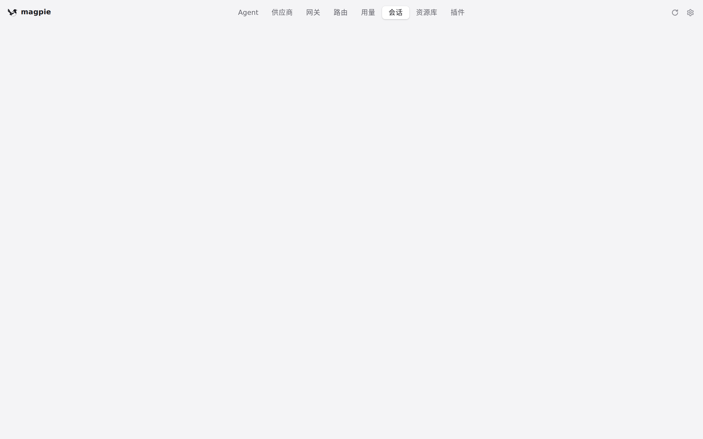
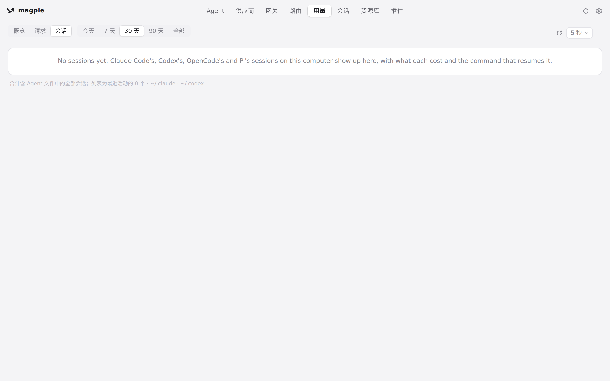

#1033 界面预览
commit 5792901 · 回到 PR · Go 侧新增 Reasonix 本地会话适配；界面上的可见改动是会话行与会话详情在用量不完整时多出一行「用量历史不完整」提示（会话行同时给 token 数字加了说明性 title），并为中/日/德补齐了这两条文案。
红线是鼠标走过的轨迹，红色圆环是一次点击；底部文字是这一步在做什么。空格暂停，← → 逐段查看。

会话页：会话行与详情 · 会话页：Agent 条与下面的会话列表

用量 › 会话标签页 · 「用量 › 会话」里的会话列表